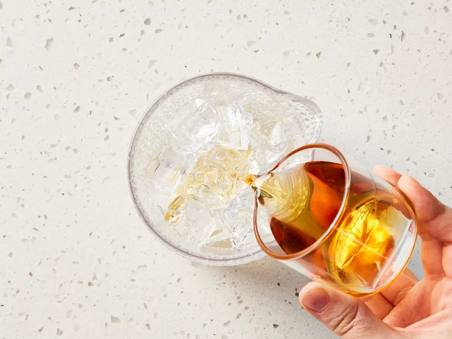

How to make a "True" Manhattan
About
Follow this recipe to make the best Manhattan cocktail,
then serve it straight up or on the rocks. Most Manhattan
drinkers prefer this classic drink to be stirred,
not shaken. (Only shake it when asked to do so!)
Ingredients
- 1 cup ice cubes, or as needed
- ½ fluid ounce sweet vermouth
- 2 fluid ounces whiskey
- 1 dash bitters
- 1 maraschino cherry for garnish
Directions
- Gather all ingredients
- Fill a mixing glass with ice cubes. Pour in vermouth, then whiskey.

- Stir, then strain into a cocktail glass.
- Add bitters.
- Garnish with cherry.
For a Dry Manhattan
Follow the recipe, but use dry vermouth instead of sweet, and lemon peel instead of a cherry.